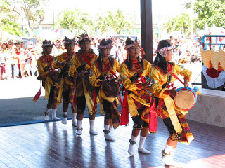
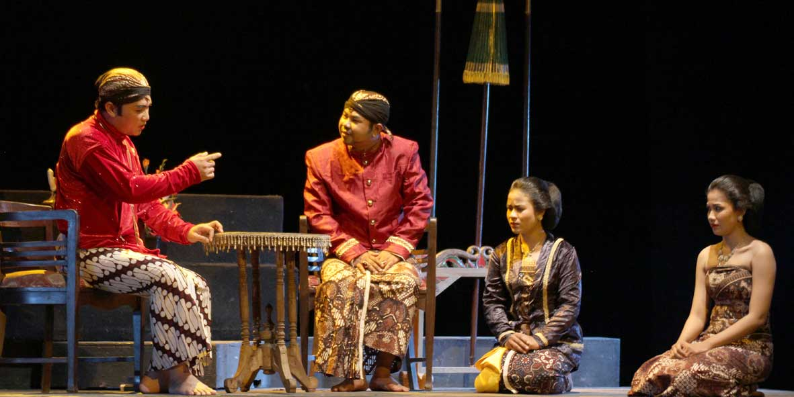
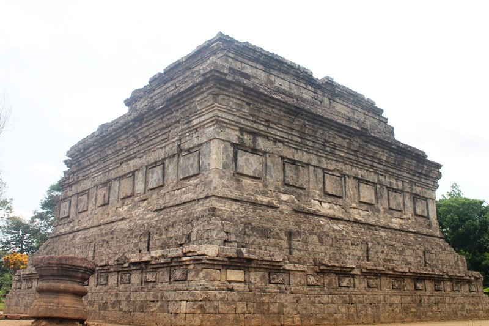
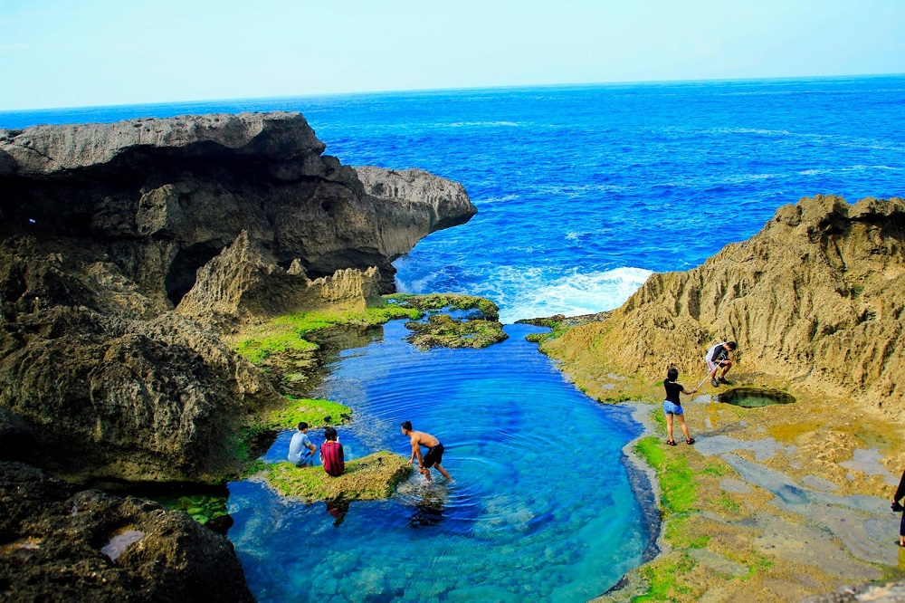
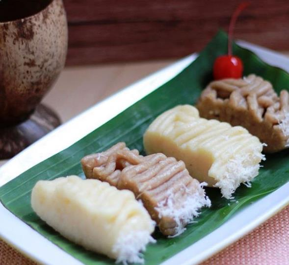
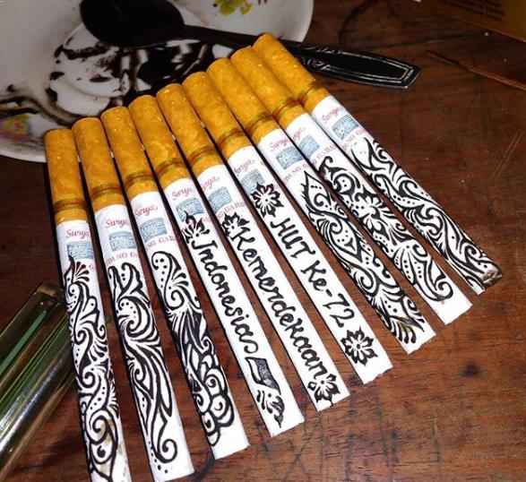

Kabupaten Tulungagung , adalah salah satu kabupaten yang terletak di Provinsi Jawa Timur, Indonesia. Pusat pemerintahan Kabupaten Tulungagung berada di Kecamatan Tulungagung. Tulungagung terkenal sebagai satu dari beberapa daerah penghasil marmer terbesar di Indonesia, dan terletak terletak 154 km barat daya Kota Surabaya, ibu kota Provinsi Jawa Timur.
Seni jaranah ini sangat banyak diminati oleh warga Tulungagung. Hampir semua desa di Tulungagung mempunyai grup atau paguyuban kesenian jaranan ini. Dari anak-anak sampai dewasa banyak yang mengenalnya. Ada beberapa jenis jaranan di Tulungagung , yaitu Jaranan Jawa, Jaranan Pegon, Jaranan Campursari, dan Jaranan Senterewe.
Ketoprak ini merupakan kesenin tradisional yang menceritakan keadaan masa lalu atau jaman kerajaan yang di perankan beberapa orang. Ketoprak siswo budoyo adalah ketporak Tulungagung yang terkenal di mana-mana . Dan sejak meninggalnya pimpinan Ketoprak Ki Siswondo Hardjosoewito, kesenian ketoprak semakin surut , dan mungkin dikalangan muda banyak yang belum tau apa ketoprak itu.
Candi Sanggrahan dulunya adalah tempat sembahyang agama Budha. Belakangan, setelah tidak digunakan lagi, candi ini beralih fungsi menjadi objek wisata yang terbuka untuk umum dan udara yang sejuk serta lingkungan yang nyaman dan terawat dengan baik menjadi daya tarik tertentu.
Pantai Kedung Tumpang berlokasi di Desa Pucanglaban, kec. Pucanglaban, Tulungagung. Berbeda dengan objek wisata pantai lainnya yang cendurung menawarkan keindahana pasir putih yang lembut, Pnatai Kedung Tumpang menawarkan keindahan tebing karang yang terkikis ombak pantai. Akibat pengikikisan tersebut, terbentuklah beberapa kolam alam yang berisi air berwarna biru kehijauan
Getuk pisang sering dijadikan oleh oleh khas Tulungagung. Bahkan ada beberapa wisatawan yang begitu datang ke Tulungagung pasti langsung akan mencari getuk pisang ini untuk dikonsumsi sendiri ataupun dibeli sebagai oleh oleh. Rasanya sangat lezat dan khas. Bahan pembuatannya mudah didapat dan cara pengolahannya pun tidak rumit. Tampilannya mirip dengan lontong, namun tentu saja rasanya berbeda karena bahan pembutaannya pun juga berbeda.
Minum kopi merupakan salah satu kegemaran masyarakat Tulungagung. Ada satu kopi khas Tulungagung yang dikenal dengan nama kopi ijo. Dinamakan kopi ijo karena warnanya hijau kehitam hitaman dan dicampur dengan bubuk kacang hijau yang telah diolah. Kegemaran minum kopi ini tidak lepas dari budaya nyethe yaitu mengoleskan endapan kopi ke rokok yang menyala. Nah, kopi yang dipakai untuk nyethe inilah yang dinamakan kopi cethe. Rokok yang digunakan untuk nyethe inipun memiliki motif yang unik, bahkan ada yang bermotif batik. Budaya ini membuat terobosan baru bagi bidang kuliner di Tulungagung. Hingga saat ini hampir setiap jalan di perkotaan di Tulungagung bisa anda temui penjual kopi. Bahkan ada satu desa di Tulungagung yang hampir seluruh tepi jalannya membuka warung kopi. Desa tersebut bernama Desa Bolorejo. Saat ini kemasan kopi ijo dan kopi cethe sudah semakin menarik dan cocok dijadikan oleh oleh bagi anda pecinta kopi nusantara.
